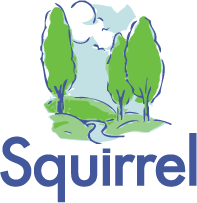

Experience
Squirrel Consulting Pvt. Ltd.
Software Engineering Intern - Summer 2015
- Coded in Python (including ReportLab), Salesforce (Apex) and Javascript to provide solutions for investment report creation, database management, and payroll processing for a Financial Services Company
- Developed investment models for clients' financial goals
-x-x-x-x-x-x-x-x-x-x-
Tufts University Undergraduate Admissions
Member of Student Communications Board - 2013-2014
Tour Guide and Customer Service Associate - 2014-present
- Responsible for creating content for the University Admissions Website
- Included writing articles, conducting interviews, and creating videos
- Lead bi-weekly tours of up to 60 people, in addition to providing assistance to visitors
-x-x-x-x-x-x-x-x-x-x-
Tufts University Office of Residential Life and Learning
Resident Assistant - 2014-2015
- Manage residence hall of 34 students; counsel students and resolve conflicts
- Design and implement programming for up to 250 students
- Lead weekly meetings and community building activities
-x-x-x-x-x-x-x-x-x-x-
Volunteering
JumboCode
Project Lead - 2015-present
- Lead a team of 9 undergraduates
- Provide web development solutions for the Boston Harbor Islands, a branch of the National Park Service
- Work with Google's Maps API in order to integrate ferry schedules and transit information on BHS's website
-x-x-x-x-x-x-x-x-x-x-
Peer Health Exchange
Leadership Council Member - 2014-2015
Health Educator - 2013-2014
- Managed and trained a group of 15 health educators
- Taught workshops on sex-ed, alcohol, marijuana, and healthy relationships in Boston Public Schools
Education
Tufts University, Medford MA
- Majors: Computer Science, Economics; Minor: English
- CGPA:3.65, Deans List All Semesters
- Expected Graduation: B.Sc. and B.A.: 2017
-x-x-x-x-x-x-x-x-x-x-

Cathedral and John Connon School, Mumbai, India
- Graduation: ISC 2013 (93.8%), ICSE 2011 (93%)
- Scholar's Badge
- Gandhy Medal for Leadership
-x-x-x-x-x-x-x-x-x-x-
Skills
Technical
Self taught Python, iOS (Swift), Salesforce (Apex), Javascript; C, C++, Java
Relevant Classes Taken
Web Programming, Data Structures, Machine Structure and Assembly Language, Financial Economics, International Finance, Statistics, Micro- and Macro-Economics
Public Speaking
Tufts Debate Team, College and High School Model UN
Language
Proficient in Hindi
-x-x-x-x-x-x-x-x-x-x-